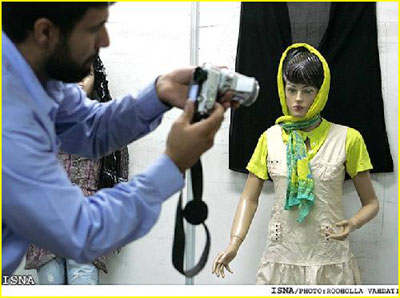
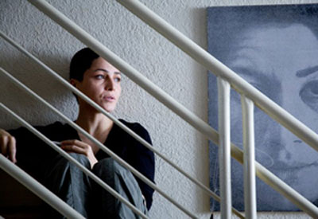
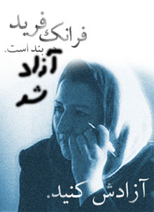
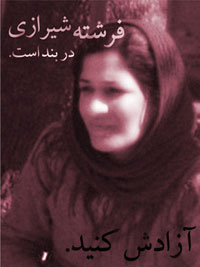
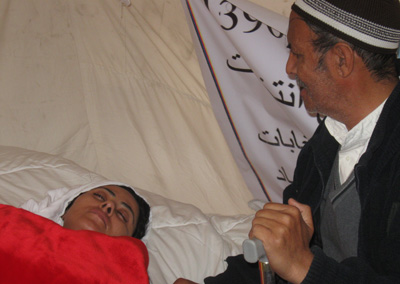

پذيرش > اخبار > با زنان در خبر: زندان و شلاق به جرم برابری خواهی و بازیگری: فرشته شیرازی و مرضیه وفا (...)


 با زنان در خبر: زندان و شلاق به جرم برابری خواهی و بازیگری: فرشته شیرازی و مرضیه وفا مهر با زنان در خبر: زندان و شلاق به جرم برابری خواهی و بازیگری: فرشته شیرازی و مرضیه وفا مهر
25 مهر 1390 - - نسخه قابل چاپ
هفته سوم مهر. 1390
تغییر برای برابری: در گزارش تحلیلی این هفته مساله ی اعدام متجاوزین به عنف و وضعیت قربانیان حوادث مزبور در گفتگو با صاحب نظران،آخرین برآیندها از وضعیت حجاب و عفاف در کلام مسئولین دولتی،حادثه ی جدید اسیدپاشی بر مادر و دختری جوان،حکم سه سال حبس و 7 سال ممنوع الخروجی فرشته شیرازی فعال حقوق زنان،گزارش احمد شهید گزارشگر ویژه حقوق بشر ایران در رابطه با زنان،آخرین وضعیت سیمین بارکزی نماینده برکنارشده ی پارلمان افغانستان از جمله مواردی است که بدان ها پرداخته شده است.
تجاوز جنسی، اعدام و مشکلی که حل نشده باقی می ماند
وقتی صفحات حوادث روزنامه های ایران را ورق می زنیم داستان تجاوز جنسی و به طبع آن اعدام مجرمان به وفور دیده می شود اما همچنان آمار دقیق و مبسوطی از "تجاوز جنسی"در ایران از سوی مسئولین مرتبط با دستگاه انتظامی و قضایی ارائه نشده است که دلیل آن را اسماعیل احمدی مقدم فرمانده نیروی انتظامی در ایران تقریبا سه سال پیش اینطور عنوان کرده که "ارائه آمار تجاوزات جنسی ذهن جامعه را مشوش می کند".
پس از رسانهای شدن چند مورد تجاوز جنسی در چند ماه گذشته در خمینی شهر، کاشمر و استان گلستان بود که در نهایت اسماعیل احمدی مقدم برای ارائه ی توضیحات در این رابطه به مجلس فراخوانده شده و برای اولین بار اعلام کرد که" از سال 86 تاکنون حدود 900 فقره تجاوز جنسی ثبت شده است" که از گفته های این مقام مسئول چنین بر می آید که آمار تجاوزاتی که رسانه ای یا ثبت نشده اند چیزی بیشتر از این تعداد است.
در هفته ای که گذشت نیز اعدام متهمان دو پرونده ی تجاوز جنسی در استان اصفهان به فاصله ی چند روز از یکدیگر انجام گرفت که مراسم اجرای اعدام پرونده ی دوم که چهار مجرم را در بر گرفت در ملاعام و در حضور هزاران نفری که برای دیدن این صحنه آمدند برگزار شد.مورد اول در رابطه با یک مرد ۶۷ ساله که پروندهاش از چهار سال پیش به اتهام تجاوز به ۳۷ زن و دختر جوان و هدایت یک «فاحشه خانه» در جریان بود که روز شنبه در زندان مرکزی اصفهان اعدام شد بوده که گزارشها حاکی است که ۱۲۰ ساعت فیلم از صحنههای تجاوز این مرد به دست آمده است. و مورد دوم که سر و صدای زیادی به پا کرده بود اعدام چهار جوان زیر 25 سال بوده که نیمه شب یازدهم خرداد ماه امسال، به اتفاق چند تن دیگر که هم اکنون متواری هستند با حمله به باغی در خمینی شهر اصفهان که یک مهمانی خانوادگی در آن برگزار می شد، با زندانی کردن مردان حاضر، به چند زن و دختر به شکل گروهی تجاوز کردند. حاکمیت راه حل مقابله با تجاوز جنسی و کاهش چنین ناهنجاری های اجتماعی در ایران را تنها اعدام متهمین در نظر گرفته است یا حتی در بسیاری از موارد تقصیر را بر دوش قربانیان حادثه انداختند که اگر لباس مناسب می پوشیدند چنین اتفاقی نمی افتاد اما فعالان اجتماعی و حقوق زنان نظر متفاوتی دارند که در همین رابطه نفیسه آزاد از مدافعان حقوق زنان به تغییر برای برابری می گوید:"داستان اعدام متجاوز هیچ برنده ای ندارد، اعدام متجاوزین، دردی از زنانی که مورد تجاوز قرار گرفتند و بعد هم در دادگاه تحقیر شدند و توهین شنیدند با اعدام متجاوزین سودی نمی برند.زنانی که مورد تجاوز واقع می شوند، نیازمند خدامات درمانی، مشاوره و حمایت هستند تا بتوانند به زندگی عادی خود برگردند. از سوی دیگر مجازات اعدام برای متجاوز، فقط برخوردی حذفی است که خشونت را با خشونتی بیشتر پاسخ می دهد".وی همچنین در ادامه می افزاید:"اصلا اگر از سمت دیگر به این جریان نگاه کنیم می بینیم که جرم و مجازات در این زمینه تناسبی ندارد. یعنی قاضی که باید برای پرونده ی تجاوز حکم اعدام صادر کند، خوب معلوم است که به این راحتی دست به این کار نمی زند، برای همین از طرفی به زن فشار می آورد که از شکایت خود صرفنظر کند و از سوی دیگر تلاش می کند پرونده را به سمتی ببرد که تجاوز را ثابت نشده در نظر بگیرد که در این صورت زن متهم به زنا است و باید شلاق بخورد". اعدام تنها راه حلی خشن و مقطعی است که کمکی به حل هیچ مشکلی نمی کند شاید آدم هایی که اعدام شدند، پتانسیل این را داشتند که آموزش ببینند و تغییر کنند."
مسئولان:بدحجابی! در بیمارستان ها تابعی از کل جامعه است

در سال های گذشته با اتمام فصل تابستان و آغاز پاییز که هوا رو به سردی می رود سختگیری نسبت به حجاب زنان کمتر می شد اما علی رغم سیاق سال های گذشته امسال مسئولین حاکمیت همچنان نسبت به وضعیت حجاب و پوشش بانوان نالانند و خط و نشان می کشند.حتی تابستان امسال نیز به نسبت سال های گذشته سخت گیری بیشتری اعمال می شد که در همین رابطه سایت شهرزادنیوز به نقل از وب سایت نیروی انتظامی ایران خبر داده که در فصل تابستان 80 هزار نیروی نظامی جهت کنترل پوشش مسافرین تابستانی به استان های شمالی کشور اعزام شده بودند.
حسين علي شهرياري نايب رئيس كميسيون بهداشت و درمان مجلس که به بهانه آنچه عدم رعايت حدود شرعي در بیمارستان ها خوانده می شود با هفته نامه تندرو یالثارات گفتگو کرده در بخشی از این گفتگو در پاسخ به این پرسش که چرا پرستاران و پزشکان نسبت به مساله ی حجاب بی تفاوت هستند، ضمن آنکه بدحجابی پرسنل بیمارستان را تابعی از کل جامعه خوانده می گوید:" افرادی که در بیمارستانها کار می کنند جدای از جامعه ما نیستند. متاسفانه ما در عرصه فرهنگ به طور کلی با مشکلات جدی مواجه هستیم. مگر ما تا امروز توانسته ایم وضعیت پوشش خانمها در معابر عمومی و دانشگاهها را بهبود ببخشیم؟"
یکی از نویسندگان سایت رجانیوز در مطلبی تحت عنوان "حجاب در قم هر روز بدتر از دیروز"می نویسد:" این روزها مخصوصا درطول یک سال اخیر وضع حجاب درمیان دختران وزنان وخیم شده وهرروز بی حجابی وبدحجابی درقم گسترش می یابد، درطول یک سال اخیر بارها صحنه های تکان دهنده بی حجابی وبدحجابی بعضی ازبانوان را آن هم دراطراف حرم ومکان های دیگر دیده ام-چیزهایی که تابحال قم به خود ندیده بود-بی حجابی،مانتوهای تنگ وکوتاه رنگی،آرایش غلیظ ،بانوان بی حجاب وبدحجابی که براتومبیل سوارند"،این وبلاگ نویس در بخش دیگری از مطلب خود به حدی وضعیت شهر قم را بغرنج توصیف می کند که مجبور شده بر حسب وظیفه اش آن را به اداره اطلاعات آن شهر گزارش کند.در خبری دیگر مرتبط با شهر قم صافی گلپایگانی از مراجع تقلید در قم در رابطه با مدال آفرینی دختر جوانی قمی در رشته ای ورزشی تأكيد كرد: اينكه زن قمی در فلان رشته ورزشی رتبه بياورد برای ما افتخار نيست؛ زن قمی بايد در عفاف و حجاب و عفت و پاكدامنی و خانهداری كه اشرف مشاغل است پيشرو باشد".
سوسن مرندی، عضو هیئت علمی دانشگاه الزهرا در گفتوگو با خبرنگار زنان باشگاه خبری فارس با بیان این مساله که بازیگران چادری بودن را بلد نیستند گفته که در مواردی شاهد هستیم افرادی در فیلمها و سریالها با چادر نمایش داده میشوند که تنها حجاب و پوشش ظاهری آنها، اسلامی است و هیچگونه رفتار مختص به افراد مذهبی را از سوی این افراد شاهد نیستیم،همچنین به گفته او "این نوع نمایش افراد چادری در فیلمها و سریالها نیز با آسیبهایی همراه است".
با وجود آنکه بسیاری از شخصیت های حکومتی در ایران و رسانه های وابسته به آن ها به طور ضمنی نسبت به عدم موفقیت و ناکامی طرح هایی نظیر حجاب و عفاف و گشت ارشاد معترف شده بودند اخیرا اما پروین سلیحی رئیس شورای سیاستگذاری جشنواره بین المللی تولیدات رسانه ای عفاف و همینطور فرمانده نیروی انتظامی ایران مدعی شده اند که: "طی چند وقت گذشته آمار عفاف و حجاب در جامعه رشد 7 تا 10 درصدی داشته است". این درحالیست که داریوش قنبری عضو کمیسیون اجتماعی مجلس ضمن رد و غیر منطقی خواندن این آمار گفته که :" این آمارها آمار دقیقی نیست و معمولا از سوی برخی مدیرانی ارائه می شود که تنها می خواهند گزارشی مطلوب از وضعیت کاری خود را ارائه دهند".
داستان دنباله دار اسیدپاشی
اسیدپاشی یکی از خشن ترین انواع خشونت است که در اغلب مواقع قربانیان آن را زنان تشکیل می دهند.در ایران نیز موضوع اسیدپاشی آمنه باعث شده بود که این مساله مورد توجه قرار گیرد.اما به تازگی مورد جدیدی اتفاق افتاده که خبرگزاری مهر اینطور گزارش کرده که سیما زن جوانی که در آستانه جوانی و 18 سال بیشتر ندارد چند روز پیش در مراجعه به منزل و پیش چشم ده ها شهروند از سوی یکی از خواستگاران سابق خود به همراه دختر خردسالش قربانی اسیدپاشی شد، در این حادثه مجرم در انظار عمومی و در حالی که برخی از همسایه ها شاهد ماجرا بوده اند، ظرف دو لیتری اسید را بر گردن، دست و سر و صورت "سیما" مادر "سما" خالی می کند
در حادثه اسید پاشی اردبیل علاوه بر سیما و دخترش دو نفر از همسایه ها نیز که برای کمک به آنها تلاش می کردند، دچار سوختگی از ناحیه دست و صورت شده اند.سیما در لحظه حادثه با فداکاری تنها توانسته است با دور کردن فرزند خود، از ریختن بیشتر اسید بر سر و صورت سما جلوگیری کند، اما با تمام تلاش مادر زیبایی و معصومیت سما نیز مورد آسیب واقع شده است.برادر سیما با اشاره به ابعاد این حادثه افزود: سیما از ناحیه گردن، شانه ها، سر و صورت و دستها تا آرنج سوخته است و هم اکنون تحت مراقبتهای ویژه پزشکی است. وی با بیان اینکه به چشمهای خواهرش نیز در اثر این حادثه صدمه جدی وارد شده است، اضافه کرد: به گفته پزشکان سوختگی بسیار شدید بوده و هم اکنون یک چشم سیما بطور کلی بسته و چشم دیگرش نیز به سختی باز می شود.
مجازات اسیدپاشی در ایران در صورت نقص عضو قصاص است که در آخرین مورد اجرای حکم آن آمنه قربانی معروف اسیدپاشی با تلاش های بی وقفه توانست حکم قصاص فرد اسیدپاش را بگیرد اما در لحظه ی اجرای حکم، اسیدپاشی که باعث نابینایی وی شده بود را بخشید و همزمان اعلام کرد که" من فرد اسیدپاش را بخشیدم اما دیگران ممکن است که از این مساله نگذرند اما من تا به آخر به دنبال حقم آمدم تا برای اولین بار چنین حکمی را بگیرم که دیگر کسی جرات اسیدپاشی را نداشته و به فکر تقاص آن باشد(نقل به مضمون)".حال باید دید که سیما چه خواهد کرد؟آیا همچنان اسیدپاشی قربانیان جدیدی را خواهد گرفت؟
افزایش فشارها بر فعالان زن

مرضیه وفامهر مستندساز و بازیگر سینما که به خاطر بازی در فیلم «تهران من حراج» ساخته گراناز موسوی، از تیرماه امسال در بازداشت به سر میبرد، از سوی دادگاه انقلاب تهران به یک سال حبس تعزیری و ۹۰ ضربه شلاق محکوم شد، استراليا نیز ضمن محکومیت حکم شلاق و زندان برای «مرضيه وفامهر» از جمهوری اسلامی ايران خواست تا حقوق بشر را در مورد شهروندان ايرانی و خارجی رعايت کند. گفته می شود تظاهر به مشروب خواری و تراشیدن موی سر در نقشی که ایفا کرده است از جمله دلایل صدور چنین حکمی بوده است!درهمین رابطه همسری وی گفته که حکم شلاق همسرم واکنش خوبی نخواهد داشت.
در خبری دیگر هومن فخار که پیشتر در تاریخ ۲۹ بهمن ماه سال گذشته بازداشت و به قید وثیقه و به طور موقت آزاد بود، روز شنبه 23 مهرماه با رفتار خشونتآمیز مأموران امنیتی بازداشت و به محل نامعلومی منتقل شد.

خبر خوب مهرماه آزادی فرانک فرید، فعال حقوق زنان، شاعرو مترجم بود. او پس از تحمل 42 روز بازداشت با قید وثیقه صد میلیون تومانی از زندان تبریز آزاد شد.

دادگاه فرشته شیرازی فعال حقوق زنان و از فعالان کمپین در آمل در روزهای 6 و 7 مهرماه در دو دادگاه جزایی عمومی و دادگاه انقلاب برگزار شد. در این دادگاه اتهامات "نشر اکاذیب"، "تشویش اذهان عمومی" و توهین به مسئولین"، و "تبلیغ علیه نظام" علیه وی مطرح گردیده است. هر چند تمامی اتهامات انتسابی از سوی متهم رد شده بود، اما قاضی دادگاه عمومی در رای غیرمنتظرهایی حکم سه سال حبس تعزیری و هفت سال ممنوعیت خروج از کشور را برای فرشته شیرازی صادر کرده است.و همچنین قرار است به زودی رای دادگاه انقلاب صادر شود که با توجه به عدم رعایت دادرسی عادلانه وضعیت او را گران کننده کرده است.
بنا به گزارش منابع آگاه نسرین ستوده را به دلیل درگیری لفظی که دو هفته پیش با مسئولین زندان بر سر چادر اجباری, پیدا کرده بود به مدت سه هفته ممنوع الملاقات کردند.همچنین در خبری دیگر فرانک فرید فعال حقوق زنان در تبریز با قید وثیقه از زندان آزاد شد.
گزارش احمد شهید گزارشگر ویژه حقوق بشر در ایران اخیرا منتشر شده که در قسمت زنان این گزارش نسبت به " عدم ظرفیت دولت برای ایجاد دموکراسی"،" چندصدایی و برابر جنسیتی که به طور جدی از طریق سرکوب فعالان که برای ارتقا این گفت وگو تلاش می کنند نادیده گرفته شده" ،"به کارگیری برخی قوانین تبعیض آمیز که مانع برقراری برابری جنسیتی می شود"،"سرکوب فعالان حقوق زنان به ویژه فعالان کمپین یک میلیون امضا"،"بی حرمتی نسبت به قربانیان حوادث تجاوزات اخیر" و همچنین دو تن از فعالان دانشجویی و زنان بهاره هدایت و محبوبه کرمی اعتراض شده است.،
با زنان دیگر کشورها

سیمین بارکزی، نمایندهی مردم هرات در مجلس نمایندگان کشور که درپی رسیدگی دوباره به پروندههای انتخاباتی از سوی دادگاه اختصاصی از حضور در مجلس محروم شد و کمیسیون مستقل انتخابات نیز رحیمه جامی نامزد معترض را به جای وی، به مجلس نمایندگان معرفی کرد، در نهمین روز اعتصاب غذایی خود، رییس جمهور کرزی، مارشال قسیم فهیم معاون اول ریاست جمهوری، عبدالرووف ابراهیمی رییس مجلس نمایندگان و فضلاحمد معنوی رییس کمیسیون مستقل انتخابات را مسوولان مرگ احتمالی خود قلمداد کرد.در وصیتنامهی خانم بارکزی که در اختیار رسانهها قرار داده شد، همچنین مرگ خود را در راه زنده کردن عدالت، افتخار خوانده است و از اعضای ایتلاف حمایت از قانون که وی عضویت آن را نیز دارد، خواسته است که پیکرش را در زیر همان خیمهای که وی درآنجا درحال اعتصاب به سر میبرد، دفن کنند.همزمان با این، چندین تن از زنان عضو مجلس نمایندگان و مجلس سنا با گردهمایی در مقر شورای ملی، حمایتشان را از اعتصاب غذایی خانم بارکزی اعلام داشته و خواهان رسیدگی حکومت به خواستههای وی شدهاند.
در همین حال ماموران امنیتی افغانستان سیمین بارکزی را در حالی که برای کمک فریاد میزند به بهانه ی توطئه ی تروریستی، به زور به داخل یک آمبولانس انتقال میدهند و سپس خیمه و تخت خواب او را هم برمیچینند. آقای صدیقی گفته که خانم بارکزی به بیمارستان چهارد بستری محمد داوود خان تحت درمان قرار گرفته و مسئولان او را به شکستن اعتصاب غذایی قانع کرده اند.اما اعضای ائتلاف حمایت از قانون در واکنش به این اظهارات ابراز تردید کرده و گفته اند که هنوز هیچ اطلاعی از وضعیت خانم بارکزی و تصمیم او برای شکستن اعتصاب غذا ندارند
ارسال به
بالاترین
،
توییتر
،
فریندفید
،
فیسبوک
در همين بخش :
 پروین ذبیحی برنده جایزه حقوق بشری سازمان غيردولتى اتريشى سودويند شد پروین ذبیحی برنده جایزه حقوق بشری سازمان غيردولتى اتريشى سودويند شد
پخش کارت پستال و بروشور در روز جهانی زن در تهران
تمدید زمان برای امضای بیانیهی جمعی از فعالان زن به مناسبت هشت مارس
مجوزی که در نطفه خفه شد
بیش از 2000 امضا در اعتراض به تبعیض های آموزشی به مجلس تحویل داده شد
ديگر بخش ها :
طرح یک میلیون امضا
|
مقالات
|
سایت نوشته ها
|
اخبار
|
گزارش كمپين
|
گفت و گو
|
علیه سکوت
|
كوچه به كوچه
|
نامه های شما
|
گزارش ویژه
|
گفتگو با اعضا
|
ویژه سالگرد کمپین
|
تصویر برابری
|
دل آرام علی
|
تریبون
|
مقالات
|
تاریخ شفاهی
|
خارج از چارچوب
|
کتابخانه
|
درباره کمپین
|
کمپین در شهرها
|
کمپین در بند
|
صدای تغییر
|
ویژه 22 خرداد
|
لایحه حمایت از خانواده
|
گالری
|
عشا مومنی
|
امیر یعقوبعلی
|
خدیجه مقدم
|
راحله عسگری زاده و نسیم خسروی
|
پروین اردلان،جلوه جواهری، مریم حسین خواه، ناهید کشاورز
|
زینب پیغمبرزاده
|
سعیده امین، سارا ایمانیان، محبوبه حسین زاده، ناهید کشاورز و همایون نامی
|
احترام شادفر
|
نسیم سرابندی زاده،فاطمه دهدشتی
|
وبلاگ مهمان
|
پرونده خرم آباد
|
دستگیری ها
|
مریم مالک
|
پرستو اللهیاری
|
مهرنوش اعتمادی
|
سمیه رشیدی
|
Other Languages
|
همراهان
|
«فراخوان کمپین ده روز با بهاره هدایت»
| English
|